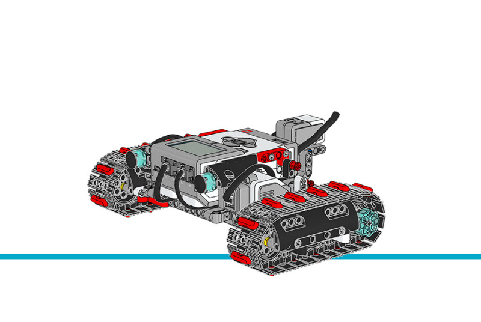

Tank Bot¶
This example project shows how you can use the
GyroSensor on Tank Bot to make
accurate turns. Depending on which EV3 Brick button you press, the robot
drives in triangles, squares, pentagons, or hexagons.
Building instructions
Click here to find all building instructions for the Expansion Set Models, or use this link to go to the Tank Bot directly.

Figure 33 Tank Bot
Example program
#!/usr/bin/env pybricks-micropython
"""
Example LEGO® MINDSTORMS® EV3 Tank Bot Program
----------------------------------------------
This program requires LEGO® EV3 MicroPython v2.0.
Download: https://education.lego.com/en-us/support/mindstorms-ev3/python-for-ev3
Building instructions can be found at:
https://education.lego.com/en-us/support/mindstorms-ev3/building-instructions#building-expansion
"""
from pybricks.hubs import EV3Brick
from pybricks.ev3devices import Motor, GyroSensor
from pybricks.parameters import Port, Direction, Button
from pybricks.tools import wait
from pybricks.robotics import DriveBase
from pybricks.media.ev3dev import ImageFile
# Initialize the EV3 brick.
ev3 = EV3Brick()
# Configure 2 motors on Ports B and C. Set the motor directions to
# counterclockwise, so that positive speed values make the robot move
# forward. These will be the left and right motors of the Tank Bot.
left_motor = Motor(Port.B, Direction.COUNTERCLOCKWISE)
right_motor = Motor(Port.C, Direction.COUNTERCLOCKWISE)
# The wheel diameter of the Tank Bot is about 54 mm.
WHEEL_DIAMETER = 54
# The axle track is the distance between the centers of each of the
# wheels. This is about 200 mm for the Tank Bot.
AXLE_TRACK = 200
# The Driving Base is comprised of 2 motors. There is a wheel on each
# motor. The wheel diameter and axle track values are used to make the
# motors move at the correct speed when you give a drive command.
robot = DriveBase(left_motor, right_motor, WHEEL_DIAMETER, AXLE_TRACK)
# Set up the Gyro Sensor. It is used to measure the angle of the robot.
# Keep the Gyro Sensor and EV3 steady when connecting the cable and
# during start-up of the EV3.
gyro_sensor = GyroSensor(Port.S4)
# Initialize the steering and overshoot variables.
steering = 60
overshoot = 5
def right_angle():
# This function drives the robot forward, turn a right angle, drive
# forward again, and then turn 180 degrees to drive back along the
# same path and return to its initial position.
# Reset the Gyro Sensor angle.
gyro_sensor.reset_angle(0)
# Drive forward for 750 millimeters
robot.straight(750)
# Turn clockwise until the angle is 90 degrees.
robot.drive(0, steering)
ev3.speaker.beep()
while gyro_sensor.angle() < 90 - overshoot:
wait(1)
robot.drive(0, 0)
wait(1000)
# Drive forward for 750 millimeters
robot.straight(750)
# Turn clockwise until the angle is 270 degrees.
robot.drive(0, steering)
ev3.speaker.beep()
while gyro_sensor.angle() < 270 - overshoot:
wait(1)
robot.drive(0, 0)
wait(1000)
# Drive forward for 750 millimeters
robot.straight(750)
# Turn counterclockwise until the angle is 180 degrees.
robot.drive(0, -steering)
ev3.speaker.beep()
while gyro_sensor.angle() > 180 + overshoot:
wait(1)
robot.drive(0, 0)
wait(1000)
# Drive forward for 750 millimeters
robot.straight(750)
# Turn clockwise until the angle is 360 degrees.
robot.drive(0, steering)
ev3.speaker.beep()
while gyro_sensor.angle() < 360 - overshoot:
wait(1)
robot.drive(0, 0)
wait(1000)
def polygon(sides, length):
# This function drives the robot along a polygon path. It uses the
# number of sides to calculate the angle to turn to, and the length
# to calculate the time to drive straight.
# Reset the Gyro Sensor angle.
gyro_sensor.reset_angle(0)
# Calculate the angle to turn to and the time to drive straight.
angle = 360 / sides
# Drive along the polygon path.
for side in range(1, sides + 1):
target_angle = side * angle - overshoot
# Drive forward.
robot.straight(length)
# Turn clockwise until the angle equals the target angle.
robot.drive(0, steering)
ev3.speaker.beep()
while gyro_sensor.angle() < target_angle - overshoot:
wait(1)
robot.drive(0, 0)
wait(1000)
# This is the main part of the program. It is a loop that repeats
# endlessly.
#
# First, it waits until any Brick Button is pressed.
# Second, it displays the chosen pattern on the screen.
# Finally, it drives in the chosen pattern.
#
# Then the process starts over, so another pattern can be chosen.
while True:
# Display a question mark to indicate that the robot should await
# instructions.
ev3.screen.load_image(ImageFile.QUESTION_MARK)
# Wait until any Brick Button is pressed.
while not any(ev3.buttons.pressed()):
wait(10)
ev3.screen.clear()
# Respond to the Brick Button press. Display the chosen pattern on
# the screen and drive in this pattern.
if Button.UP in ev3.buttons.pressed():
# Drive in a right angle.
ev3.screen.draw_text(30, 50, "Right Angle")
wait(1000)
right_angle()
if Button.LEFT in ev3.buttons.pressed():
# Drive in a triangle shape.
ev3.screen.draw_text(30, 50, "Triangle")
wait(2000)
polygon(3, 850)
if Button.CENTER in ev3.buttons.pressed():
# Drive in a square shape.
ev3.screen.draw_text(30, 50, "Square")
wait(2000)
polygon(4, 700)
if Button.RIGHT in ev3.buttons.pressed():
# Drive in a pentagon shape.
ev3.screen.draw_text(30, 50, "Pentagon")
wait(2000)
polygon(5, 575)
if Button.DOWN in ev3.buttons.pressed():
# Drive in a hexagon shape.
ev3.screen.draw_text(30, 50, "Hexagon")
wait(2000)
polygon(6, 490)
wait(100)